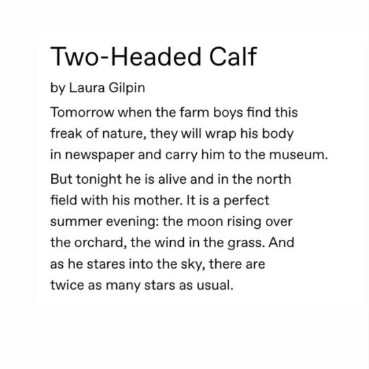
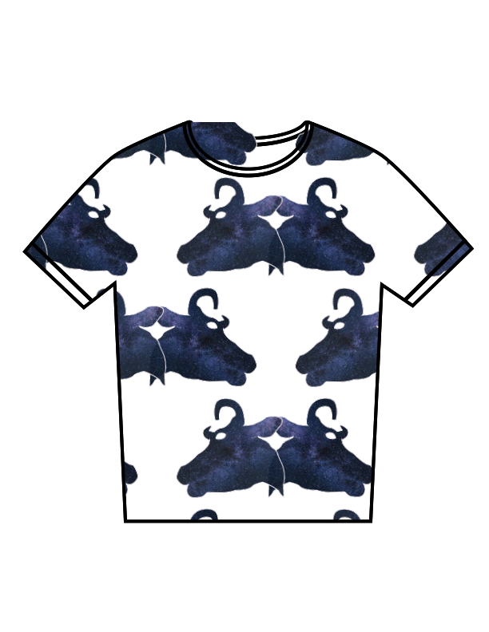
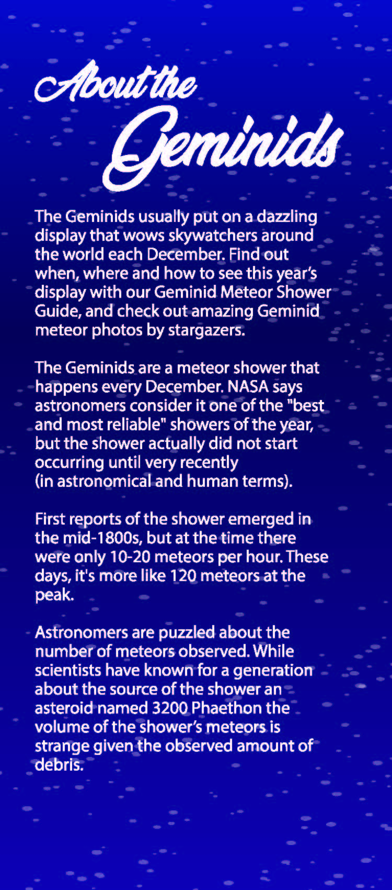
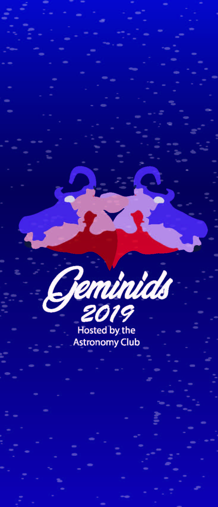
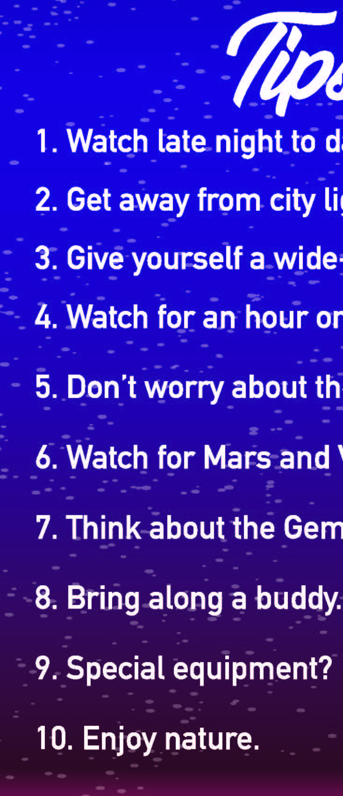
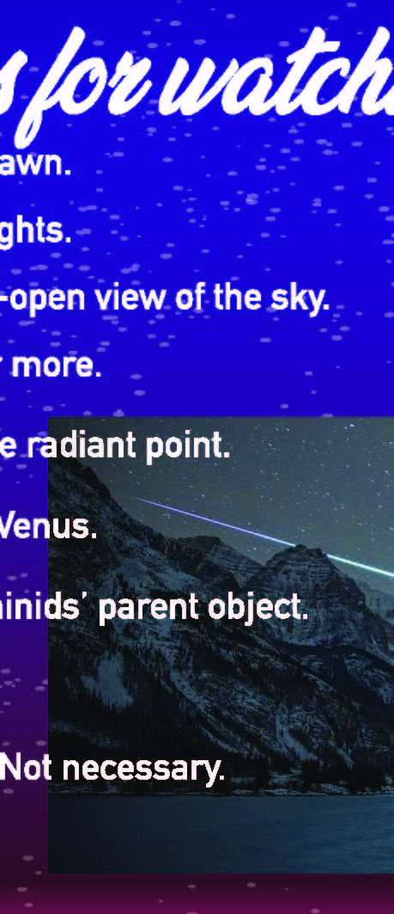

Two-Headed Calf
Series of designs made in Adobe Illustrator for Visual Communication Coursework.
Project Intro
This series of designs was created for an assignment in Digital Media 2: Vector at Loyola University Chicago. The designs are based on the poem "Two Headed Calf" by Laura Gilpin. The goal of this project was to create a cohesive body of designs based on a piece of literature. I chose this poem because of its strong imagery, and the design opportunities that it provides.
Part 1 - Patterns
For the first part of the assignment, we had to create a series of patterns based on the poem. The patterns were then printed on a series of paper cubes. The challenge with this exercise was to create a group of dynamic patterns that engaged with three dimensional space while occupying a two dimensional plane.

Part 2 - Poster
For the second part of this project, we were instructed to create a poster to advertise a fictional event based on our chosen text. Because the poem I chose talked about watching the stars, I made a poster to advertise a fictional stargazing event. I focused the design around the University of Wisconsin-Madison Manfred Olson Planetarium. I designed the poster with three sections, each with the Planetarium, to represent a different time during the night of the proposed event. This creates the sense of time passing as the viewer reads the poster from top to bottom.
Part 3 - Event Materials
For the third and final part of the project, we were instructed to create materials that would be distributed at the event we created. I chose to create t-shirts, a pamphlet, and a mobile application.
T-Shirts
The first piece of event material I created were T-shirts for the event. I used one of my previous patterns as the basis for this design. I chose to create a set of T-shirts because they are a popular event material, and I really enjoyed how one of my patterns looked in T-shirt format.
Pamphlet
I also created a pamphlet for this fictional event because a stargazing event would have a guide for its participants. The tricky part for this piece was to set up the document in a way that would print double-sided correctly. As you can see, I set up bleeds in order to remedy this. Although the images don't align on screen, this set up allowed me to print the document double-sided.
   Mobile App
Because the event centers around stargazing, I devised an application that would assist users in tracking stars and meteors. For the purposes of this project, I created a protoype of the application. I created the graphics for the application in Adobe Illustrator, and implemented them to a prototype in Adobe XD.